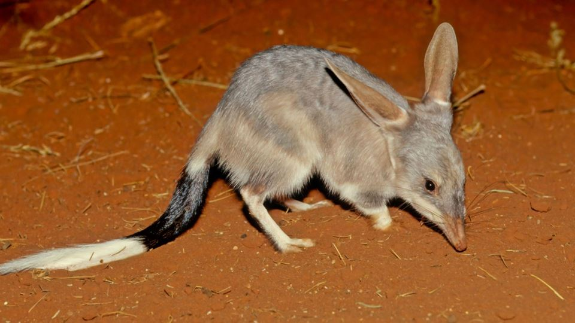

Síbulos da Páscoa na Austrália
Bilby
Na Austrália, o Bilby da Páscoa é quem chega com o outono.
Também conhecido como bandicoot-de-orelhas-de-coelho, é um pequeno marsupial com orelhas longas, um focinho pontudo, uma cauda preta e branca e pêlos acinzentados. Cerca de 100 anos atrás, os bilbies eram comuns e podiam ser encontrados em mais de 70% da Austrália continental. Agora, eles são considerados uma espécie vulnerável nacionalmente — mas na região de Queensland, onde estima se que existam apenas 600 bilbies na natureza, eles estão ameaçados de extinção. O bilby é caçado por gatos e raposas, e também é expulso de suas tocas pelos coelhos.
A Austrália tem uma história complicada com coelhos. Eles não eram uma espécie nativa e foram trazidos para o país pelos europeus em 1788. Quando eles foram libertados na natureza para fins de caça, se tornaram pragas e causaram danos ambientais consideráveis. Diante disso, não é surpresa que as pessoas na Austrália não gostassem muito da ideia do coelho ser um símbolo da Páscoa. É aí que o Bilby entrou.
Ovos de Páscoa
Os ovos de chocolate representam a nova vida e a ressurreição, sendo uma parte central da celebração da Páscoa.
Pães doces com cruz
Pães temperados marcados com uma cruz, tradicionalmente consumidos durante o fim de semana da Páscoa.
Imagens da primavera
Embora a Páscoa na Austrália ocorra no outono, símbolos como flores e pintinhos continuam sendo comuns nas decorações.
Cordeiros
São um símbolo importante da Páscoa, pois Jesus é chamado de "Cordeiro de Deus", simbolizando seu sacrifício e ressurreição.
Cruz
Um símbolo central do cristianismo, representando a crucificação e ressurreição de Jesus.
Domingo de Páscoa na Austrália
O Domingo de Páscoa é feriado em todos os estados e territórios australianos, exceto na Tasmânia. Faz parte do feriado prolongado de Páscoa, que dura quatro dias e inclui:
Sexta-feira Santa
Sábado Santo (observado na maioria dos estados e territórios)
Domingo de Páscoa
Segunda-feira de Páscoa
Muitos estabelecimentos comerciais fecham ou reduzem o horário de funcionamento no domingo de Páscoa. O transporte público geralmente opera em horário de domingo ou feriado; os funcionários que trabalham nesse dia costumam receber adicional noturno para compensá-los por trabalharem em horários inconvenientes.
Como se celebra o Domingo de Páscoa na Austrália?
Cultos religiosos:Muitas congregações realizam cultos ao nascer do sol ou pela manhã, celebrando a ressurreição de Cristo.
Caça aos ovos de Páscoa:Essa tradição é especialmente popular entre as crianças e acontece em casas, parques ou locais comunitários.
Refeições em família:O domingo de Páscoa é uma data popular para churrascos, assados e frutos do mar.
Escapadas de fim de semana:Com um feriado prolongado de quatro dias, muitos australianos aproveitam o tempo para viajar, geralmente para destinos litorâneos ou rurais.
Atividades ao ar livre:A Páscoa ocorre no início do outono, tornando-se uma época popular para caminhadas, acampamentos ou piqueniques.
Referência
O Bilby da Páscoa - Google Arts & CultureDomingo de Páscoa de 2026 na Austrália- Time and Date